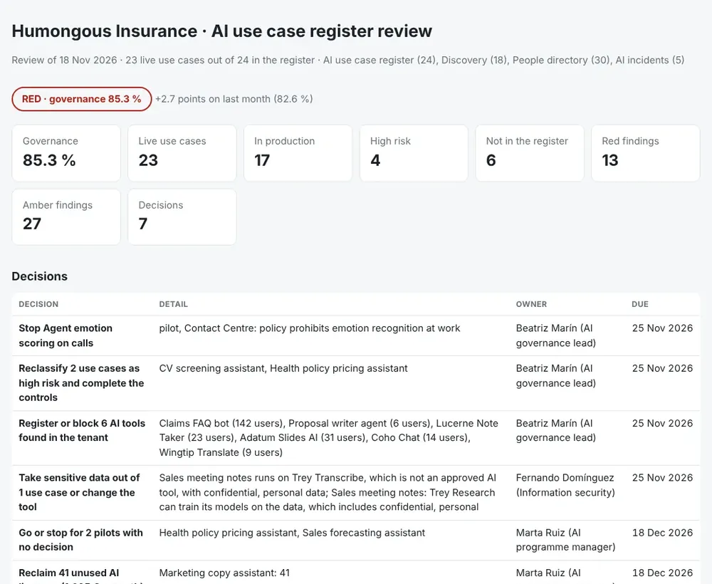

Un piloto que puntúa lo estresados que suenan los agentes del contact center en sus grabaciones llevaba cinco semanas en marcha, registrado como riesgo limitado. La política de IA de la empresa incluye el reconocimiento de emociones en el trabajo entre las prácticas que no permite. Así lo detecta la revisión del registro de casos de uso de IA que acompaña a este post, un proyecto de código abierto que se ejecuta con datos de ejemplo de una aseguradora ficticia con sede en Madrid y oficinas en Barcelona y Sevilla.
El registro es la lista de todos los sitios donde la empresa usa IA: qué hace, quién es el responsable, en qué herramienta funciona, qué datos entran y cuánto riesgo tiene. La revisión no se queda con el nivel declarado. Lo calcula a partir de la política: ámbitos que la política prohíbe, ámbitos que trata como alto riesgo (selección de personal, evaluación de empleados, tarificación de seguros, decisiones sobre siniestros), casos de uso con los que hablan los clientes o que alimentan decisiones sobre personas, y todo lo demás. El piloto de emociones acaba siendo la primera decisión del mes: pararlo y dejar constancia del motivo.
Un asistente de cribado de CV registrado como riesgo limitado
La misma comprobación encuentra dos casos de uso declarados por debajo de lo que dice la política. Un asistente que ordena las candidaturas para puestos del contact center se registró como limitado porque el formulario preguntaba quién lo usa, no qué decide; la política considera alto riesgo la selección de personal. Un piloto de tarificación de pólizas de salud está en la misma situación. El asistente de CV ya está en producción sin evaluación de impacto, análisis de riesgos ni pruebas documentadas, así que el hallazgo es rojo y los controles del nuevo nivel reciben una fecha.
Cada nivel tiene sus controles: supervisión humana, evaluación de impacto en protección de datos, análisis de riesgos, pruebas documentadas, registro de actividad, el contrato de encargo de tratamiento con el proveedor, un aviso para las personas con las que habla o sobre las que decide y un responsable con la formación en IA al día. El chatbot de la web no avisa de que es un bot, y una respuesta equivocada que dio sobre la cobertura dental lleva cuatro semanas abierta como incidente.
Seis herramientas de IA que nadie registró
El descubrimiento en el tenant encuentra seis herramientas de IA en uso sin entrada en el registro: un agente de preguntas sobre siniestros hecho en Copilot Studio con 142 usuarios, una aplicación de notas consentida por 23 personas que graba llamadas con clientes, una aplicación de presentaciones, un chat con datos personales, un agente de propuestas y una aplicación de traducción. Las notas de reuniones del equipo comercial funcionan en una herramienta que no está aprobada para datos confidenciales, y su proveedor puede entrenar sus modelos con las grabaciones.
La revisión también mira el valor: dos pilotos con más de 90 días y sin decisión, un caso de uso en producción sin business case, 41 licencias sin usar de una herramienta de redacción y un asistente de informes que ahorra un tercio de las horas que prometía. Cada caso de uso recibe una nota de gobierno. La demo saca un 85,3%, 2,7 puntos más que el mes anterior, con 13 hallazgos rojos y 27 ámbar, y termina con siete decisiones para el comité de gobierno de la IA.
Cómo usarlo con datos reales
El repositorio incluye un script de PowerShell que solo lee las aplicaciones empresariales de Entra ID que parecen herramientas de IA y cuántos usuarios tiene asignados cada una; el registro, los agentes de Copilot Studio, el descubrimiento de aplicaciones en la nube, el directorio con las fechas de formación y los incidentes van en ficheros CSV con las mismas columnas. Los niveles y los controles son la política de la propia organización en un fichero de configuración, y la revisión no decide si se aplica una ley. Funciona con Python y sin dependencias externas, y genera un informe web, un dosier de una página para el comité y ficheros CSV con cada caso de uso, control pendiente, revisión y acción. Los datos de la demo son ficticios: nombres, herramientas, proveedores, cifras y tickets.
De dónde sale
La herramienta nace de desplegar Microsoft 365 Copilot y herramientas de IA para los usuarios e impulsar su adopción, de administrar agentes de Microsoft 365 y Copilot Studio, de trabajar con IA responsable y el reglamento europeo de IA junto con ISO 27001, RGPD y NIS2, de Microsoft Purview y de preparar business cases con beneficios medibles.
¿Quieres llevarlo a tu entorno o adaptarlo a tu caso? Escríbeme y lo vemos.
Tech Career Lab · newsletter
¿Te ha servido? Cada dos semanas envío una idea práctica para perfiles IT: LinkedIn, proyectos, networking y procesos de selección.
Apúntate y llévate las 33 ideas →